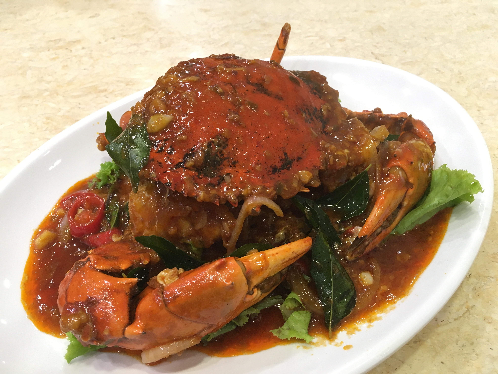
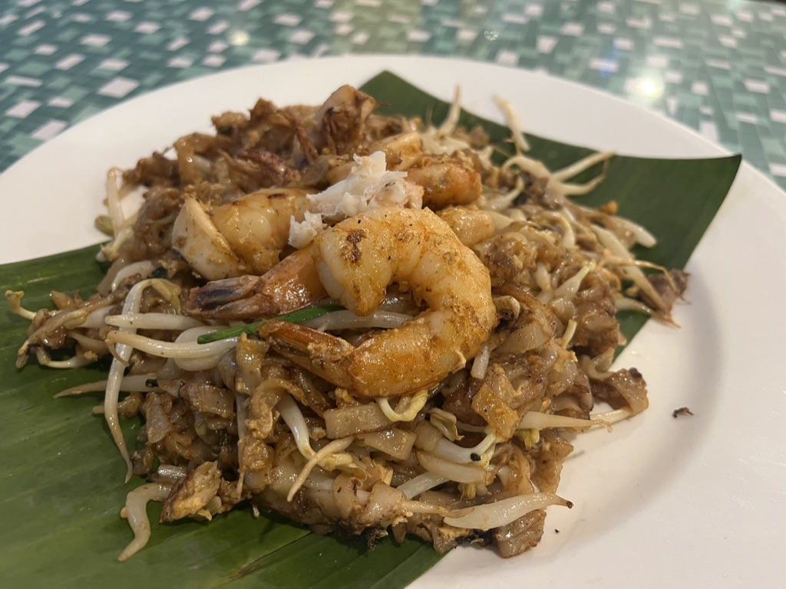
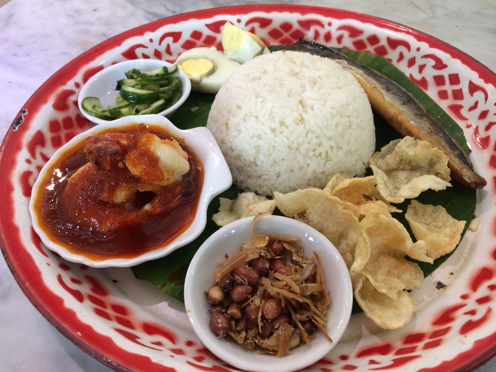
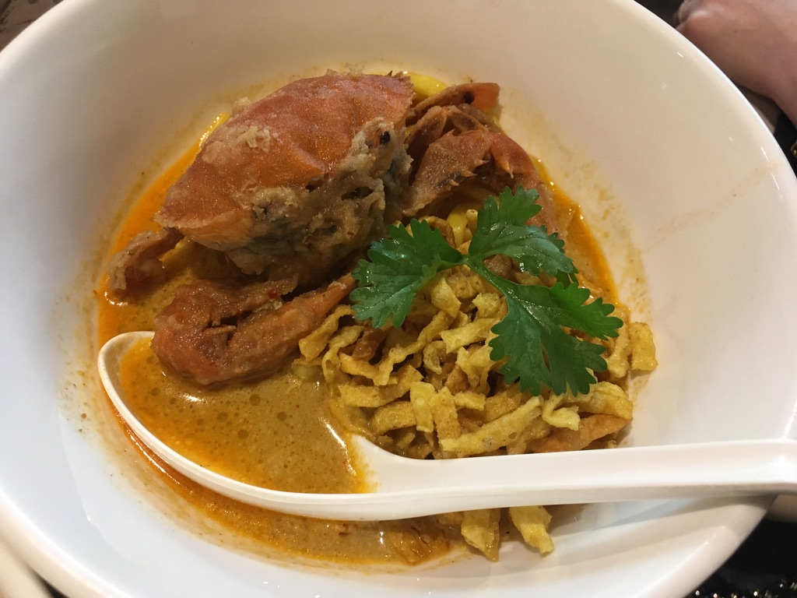
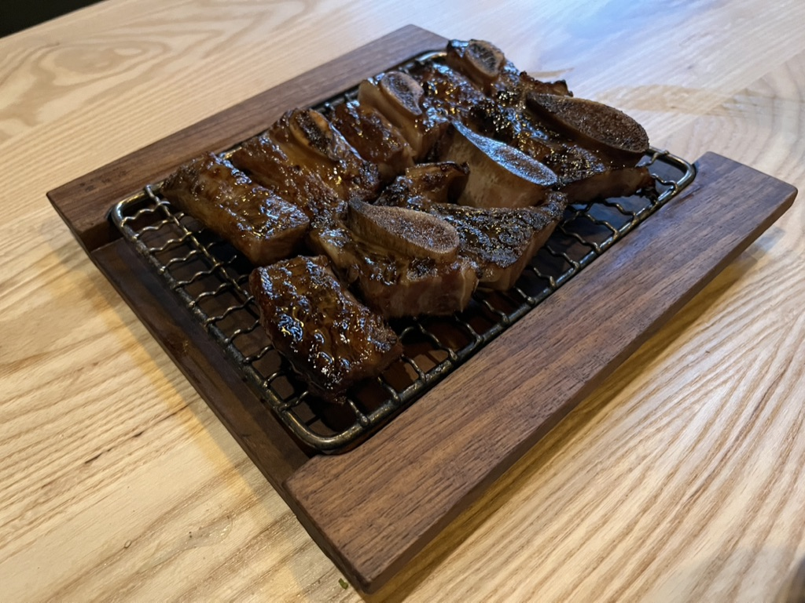

Skip to content
🌉❄️📝
/
Writing
/
Experiments in managing perfectionism
/
Food
Get Notion free
Open in Notion ↗
Light appearance
Dark appearance
Use system appearance
Print page
Search
×
Food




